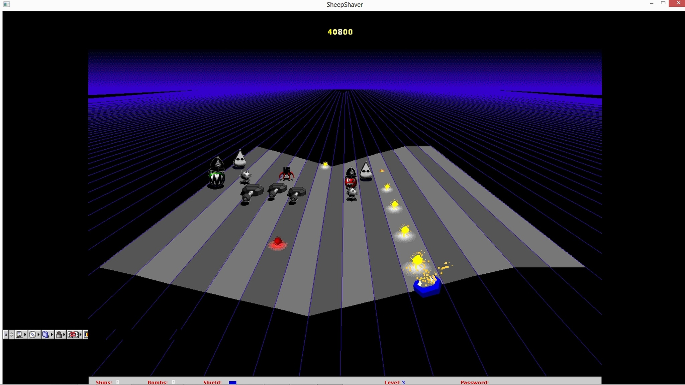

BlackLash
BlackLash (1998) is an interactive web game created by the British art collective Mongrel. Built as a parody of the 1990s arcade game MacAttack, BlackLash uses familiar video game mechanics to critique racism, class, and digital exclusion. Rather than focusing on entertainment, it invites players to confront stereotypes and systems of discrimination through humor and provocation.
Released during a time when the internet was rapidly expanding, BlackLash challenged who had access to digital spaces and whose stories were represented online. By combining lo-fi graphics, hip-hop sound clips, and confrontational imagery, Mongrel turned gameplay into social commentary, forcing players to question how race and identity are coded into digital culture.